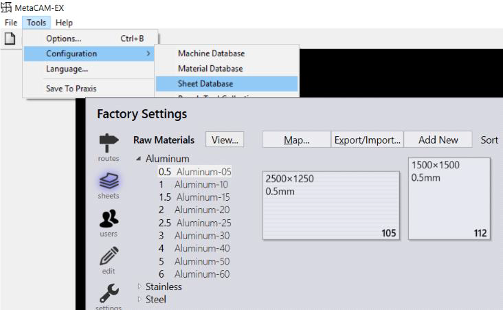

Check-out the part by choosing a bend/fold tooling solution to edit the part.
Check-out the part by choosing a bend/fold tooling solution to edit the part.Praxis has been integrated with MetaCAM. To check MetaCAM- Praxis connection in MetaCAM, Launch MetaCAM and use Tools --> Configuration --> Sheet Database command. This should bring up Praxis sheet dialog.

Check-out the part by choosing a laser/punch tooling solution to edit the part. When a cutting solution is edited in Praxis, Praxis forwards the edit request to MetaCAM with the requested tooled PDG file. MetaCAM prompts with appropriate messages when the Save or Close command is used after the editing.
Edit and save the part using icon. This brings the Praxis Checkin dialog.
Check-out the part by choosing a bend/fold tooling solution to edit the part.
Praxis plugs into Flux to handle the praxis repository files. This enables Flux now to identify a Praxis file as Part/Tooling and prompt with appropriate messages when the Save or Close command is used after the editing. Apply a tooling change to introduce a solution error (e.g. delete a punch etc.) and Save/Close the part using the Flux menu command. The praxis Checkin dialog identifies the error and prompts with the Checkin options.
| Command | Description |
|---|---|
| Ignore and Save | When this option is selected, the error is downgraded to a warning state and the part is saved to the repository. The edit session closes when this option is selected. |
| Check-in the file | The file is normally saved in the identified error state and the edit session closes. |
| Discard Changes | All changes are discarded, and the checkout is cancelled. The edit session closes. |
| Continue Editing | The check-in operation is cancelled and edit session continues. |
When the part is saved without any error, the Save to Praxis pop-up will be displayed as follows,
To prevent multiple users from editing same document together, Praxis supports checking-out of a document for editing. The document (part, tooling, job etc.) can be checked-out by a user using the Check-out command. Once checked-out, the part displays the user icon with check-out details as tooltip.
For users other than SiteAdmin/Admin and Programmer, the Checkout and Delete buttons in the command panel is replaced by the View button so that the other users cannot edit or delete the document..

To unlock the document for others, the Site Admins can cancel the checkout using Cancel Checkout command.
Just like part, part-tooling can also be edited using the checkout . update . check-in workflow. Part also gets checked-out along with the tooling such that the parent is not modified accidently by other users while the tooling is being edited. Checking-in the tooling unlocks the part. Bend toolings are edited in Flux and Cut toolings are edited using MetaCAM.